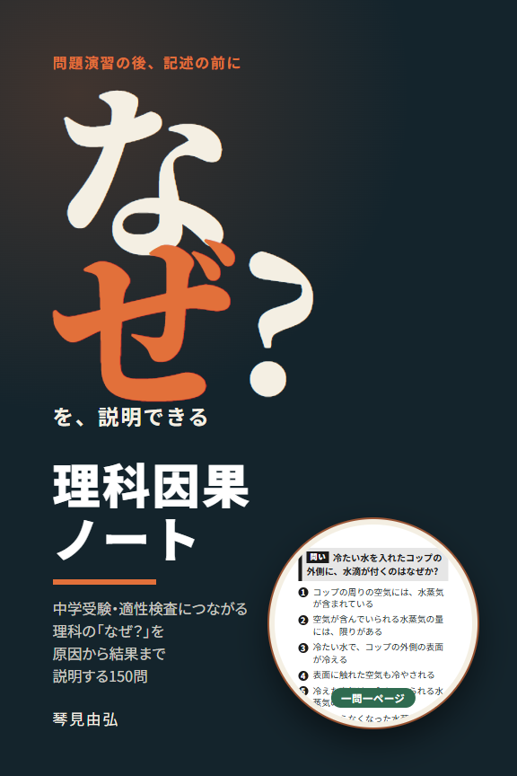

本と道具
理科の理由をたどる本と、日々の行動を記録するアプリです。
理科因果ノート

中学受験・適性検査につながる理科の「なぜ？」を原因から結果まで説明する150問
氷が水に浮くのはなぜ？ 夕焼けが赤いのはなぜ？ ご飯をかむと甘くなるのはなぜ？
身近な現象を入口に、原因と結果の間にあるつながりを、一問一ページでたどる本です。
解答例を隠して声に出し、見比べて、もう一度説明する。難しいときは先に読んでも、そのまま覚えても、自分の言葉で言い換えてもかまいません。一人でも、二人でも、親子や教室でも使えます。
150問・162ページ。説明できた日を記録するチェック欄と、問いに応じたNG例・参考を収めています。
ペーパーバックは出版申請済みです。販売開始の案内は、このページに掲載します。